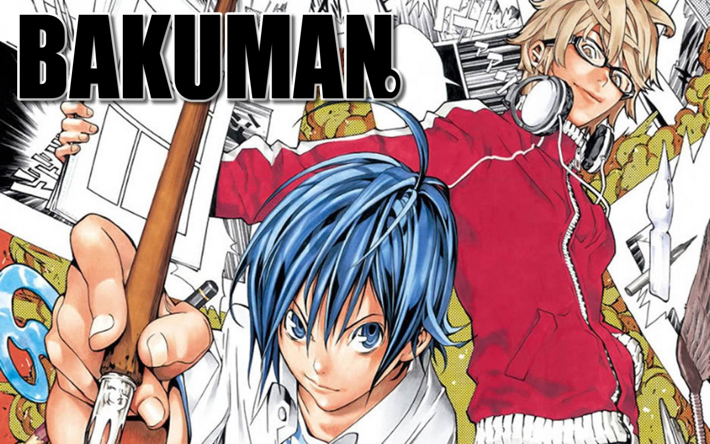
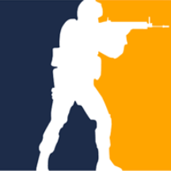

My taste
In addition to building things and gaming, I have a
variety of interests and hobbies that make up who I am.
One of the things that define my personality is my taste
in different areas. From Music to VideoGames, I have my
own unique preferences that reflect my personality and style.
Here are some of my favorite things in different categories:
-
Music: I listen mostly to Lo-Fi music

-
Anime: My favourite Anime has to be Bakuman

-
Manga: I love Bakuman but i also liked Solo Levelling

-
Films: I don't watch a lot of films but one that i really
liked was Matrix
-
Games: I used to be a hardcore OSU! Gamer (7 years of experience),
so you already guessed it, I love rythm games, but i play a lot of fps
like CSGO, COD, DOOM, TF2, Valorant ...

Go back to the homepage